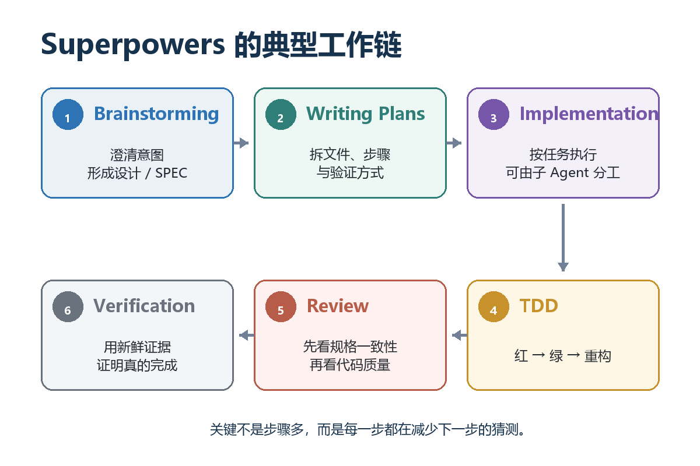

AI 写代码像一支手脚很快的施工队，最缺的是一套施工制度
挑战30天自学Web出海 · 第22天
01一句话看懂 Superpowers
用 WHAT-WHY-HOW 看懂 GitHub 项目 obra/superpowers，以及它和 SPEC、SDD、TDD、Codex、Claude Code、LLM 的关系。
第一次看到 Superpowers 这个名字，我也以为它是一套"让 AI 突然变强"的黑科技。后来顺着它的工作流看下去，才发现重点恰恰不在"超能力"，而在一件听上去很朴素的事：让一个已经很聪明、但容易着急开工的 AI，按一套靠谱的软件工程流程做事。
这几年，模型写代码的能力涨得很快。真正让人头疼的，越来越不是"它会不会写"，而是另外两个问题：
· 它有没有先把问题想清楚？
· 它怎么证明自己写对了？
Superpowers 瞄准的，就是这两道缝。
02WHAT：Superpowers 到底是什么？
GitHub 上的 obra/superpowers，把自己称为一套面向编程 Agent 的 skills framework 和软件开发方法论。这套东西是 Jesse Vincent 搞出来的，是位很典型的老派开源高手：他创建过工单系统 Request Tracker 和移动邮件客户端 K-9 Mail，担任过 Perl 项目负责人，后来又跨界创办人体工学键盘公司 Keyboardio。一路从开源软件、社区治理做到实体产品，也就不难理解他为什么会做 Superpowers——他的强项从来不只是"把代码写出来"，而是把复杂协作变成一套能够长期、稳定运行的系统。
Superpowers 它不是新模型，也不是 IDE，更不是某种"更聪明的提示词包"；它是一组可复用的 Skills，加上一条有明确关卡的开发流程。
如果把 AI 编程这件事拆开看，几层角色其实很清楚：

一张图看懂：谁负责什么？
LLM 是底层大脑，负责理解语言、推理和生成代码；Codex、Claude Code 这类 Coding Agent，则把大脑接到文件、终端、Git 和测试环境上，让它真的能干活。
Superpowers 再往上加一层：什么时候先问问题，什么时候写规格，什么时候能开始改代码，完成之前必须拿出什么证据。
装修的比喻在这里很贴切。LLM 像懂很多工艺的老师傅；Codex / Claude Code 像能进场施工、会用工具的施工队；Superpowers 不是另一支施工队，而是这家装修公司的工程管理制度。它不教工人"怎么拿电钻"，而是规定：先量房、再出图、业主确认后排工期，水电隐蔽工程要验收，完工不能只说"我觉得没问题"。
03它和 SPEC、SDD、TDD 分别是什么关系？
这几个词经常一起出现，也最容易被混成一团。我的记法是：SPEC 是一份东西，SDD 和 TDD 是两种做事方式，Superpowers 是把多种做事方式串起来的工作流。

SPEC：一份结果｜把"要做什么"写清楚｜像装修图纸
SDD：一种开发方式｜让规格驱动后续设计与实现｜先看图纸再施工
TDD：一种验证方式｜先把正确性写成会失败的测试｜先定验收题再答题
Superpowers：一套工作流｜把澄清、计划、TDD、评审、验证串起来｜施工队的管理制度
SPEC，也就是规格或设计文档，回答"到底要做什么"。SDD，即 Spec-Driven Development，强调让规格持续驱动设计、任务和实现，而不是写完就丢在抽屉里。TDD，即 Test-Driven Development，回答"怎样证明做对了"：先写一个会失败的测试，再写最少代码让它通过，最后重构。
Superpowers 则把需求澄清、规格、计划、TDD、评审和验证连成一套可执行的节奏。
04WHY：为什么这套东西会有效？
因为 Coding Agent 最常见的问题，往往不是能力不够，而是行动太快。你只说一句"给网站加个登录"，它很容易立刻装依赖、改路由、建表。等代码已经铺开，才发现真正的问题一个都没定：邮箱还是手机号？要不要验证码？登录失败几次锁定？会话多久过期？

差别不在于写代码更慢，而在于把昂贵的返工提前变成便宜的讨论
1. 它先踩刹车，再踩油门
Superpowers 的 brainstorming skill 有一个很强的"开工闸门"：设计没有提出、用户没有确认之前，不进入实现。这听起来像增加流程，实际是在前期用几分钟讨论，换掉后面几小时甚至几天的返工。还是装修：墙都砸了，再讨论这里是不是承重墙，代价当然大；动工前在图纸上改一笔，代价几乎可以忽略。软件开发也是同一笔账。
2. 它把"记得要做"变成"到了就必须做"
很多团队并不缺常识。大家都知道要确认需求、写测试、做 review。问题是忙起来以后，这些动作最容易被省略。Superpowers 的价值，不只是告诉 Agent 最佳实践，而是把它们做成会被调用的 Skills 和关卡。流程不再依赖模型临场想不想得起来。
这有点像医生的术前核对清单。主刀医生当然知道要确认患者、术式和部位，但清单的价值就是不把安全寄托在"他应该记得"。越聪明、越忙、越容易自信的人，越需要这种外部约束。
3. 它让"完成"从一种感觉变成一组证据
AI 很会写出"已完成""应该可以""看起来没问题"。Superpowers 里 verification-before-completion 的原则很直接：没有刚刚运行过的验证证据，就不能声称任务完成。测试是否真的通过、构建是否退出为 0、需求清单是否逐项覆盖，都要看到新鲜结果。
像考试一样，学生说"这题我会"不算分，卷面答案才算；施工队说"水管肯定不漏"也不算，打压测试的记录才算。它把 Agent 的自信和事实拆开了。
4. 它重新划清了人和 AI 的决策边界
没有流程时，AI 常常一边写代码，一边替你做产品决策。用了 Superpowers 这类工作流后，关键取舍会被提前暴露：做哪些、不做哪些、接受什么边界、怎样算完成。人负责方向和取舍，Agent 负责把已经确认的方向高质量执行。
05HOW：Superpowers 具体怎样工作？
它不是一个按下就全自动跑完的"大按钮"，更像一条带关卡的流水线。不同任务会有差异，但典型链路大致如下：

关键不是步骤多，而是每一步都在减少下一步的猜测
第一关：Brainstorming，把一句话需求变成可讨论的设计
Agent 先看项目背景，再通过逐个问题澄清意图、约束和边界，最后给出设计并等待确认。这里的产物通常就是 design / SPEC。重点不是把文档写得很厚，而是把那些会改变实现方向的问题提前说清楚。
一句话需求 ↓ 项目现状与约束 ↓ 关键问题逐一澄清 ↓ 设计 / SPEC ↓ 用户确认
第二关：Writing Plans，把 SPEC 拆成能落地的小任务
设计通过以后，writing-plans 会把工作拆细：哪些文件要改、每一步做什么、测试如何写、怎样验证。好的计划不是"实现登录功能"这种大标题，而是让接手的人即使不了解上下文，也能按步骤推进。
这一步很像施工排期：不是写"装修卫生间"，而是明确拆除、防水、闭水试验、贴砖、安装洁具各自的顺序和验收点。
第三关：Implementation，按任务执行，而不是边走边改目的地
执行可以由当前 Agent 按计划推进，也可以使用 subagent-driven-development 把独立任务交给不同子 Agent。分工本身不是重点，重点是每个执行者拿到清楚的任务边界，并在交回结果时接受检查。
第四关：TDD，用"先失败"证明测试真的有用
TDD 最容易被简化成"有测试就行"，其实不够。它的经典节奏是 Red → Green → Refactor：先写测试并确认它会失败；再写最少实现让测试通过；最后在测试保护下整理代码。
RED 先写测试，看到它因缺少功能而失败 GREEN 写最少代码，让测试通过 REFACTOR 保持测试通过，整理结构与重复
为什么一定要先看见失败？因为一个从来没失败过的测试，有可能根本没测到目标。就像考试前先知道答案，再反推一道永远会做对的题，看起来满分，却不能证明能力。
第五关：Review，先问"做的是不是那件事"，再问"做得好不好"
在子 Agent 驱动的流程里，评审常被分成两层：先检查是否符合 SPEC，有没有漏做或擅自加戏；再检查代码质量、结构和可维护性。顺序很重要。一个写得很漂亮、但需求做错的实现，依然没有价值。
第六关：Verification，用最新运行结果为完成盖章
最后不是凭印象总结，而是重新运行能证明结论的命令，读取完整结果，再对照计划和验收标准。只有证据支持，Agent 才能说"完成"。
这一步把整条链路收紧：前面的 SPEC 定义完成，TDD 持续检查正确性，最后的 verification 负责交付前总验收。
把整套关系压缩成一条线
想法 ↓ 需求澄清 ↓ SPEC（定义做什么） ← SDD 从这里开始驱动 ↓ 设计与实施计划 ↓ 测试先行：Red → Green → Refactor ← TDD ↓ 规格评审 + 代码质量评审 ↓ 最新证据验证 ↓ 交付 ← Superpowers 串起全流程
06它不是银弹：什么时候反而会觉得"太重"？
说到这里，也要给 Superpowers 降降温。它并不会把普通模型变成顶级架构师，也不能保证一份错误的 SPEC 自动变正确。流程只能减少某些常见失误，不能替代领域知识、产品判断和最终责任。
对于改一个错别字、调整一行配置这类低风险小事，完整流程可能显得重。对于跨文件功能、数据迁移、权限、安全、支付等高风险改动，前期澄清和验证通常非常划算。判断标准不是"任务看起来大不大"，而是"理解错和改错的代价高不高"。
07最后：Superpowers 真正提供的"超能力"
如果只看表面，Superpowers 好像让开发多了很多步骤。但把返工、遗漏和"做完才发现理解错了"算进去，它做的其实是把不确定性往前搬，把证据往后压实。
模型负责聪明，Agent 负责行动，SPEC 负责定义，SDD 负责让定义持续生效，TDD 负责把正确性变成可执行检查，Superpowers 负责让这些动作按顺序真的发生。
这也许才是 AI Coding 进入下一阶段后最值得补上的一课：当"会写代码"不再稀缺，真正拉开差距的，是能不能稳定地把正确的东西做出来。